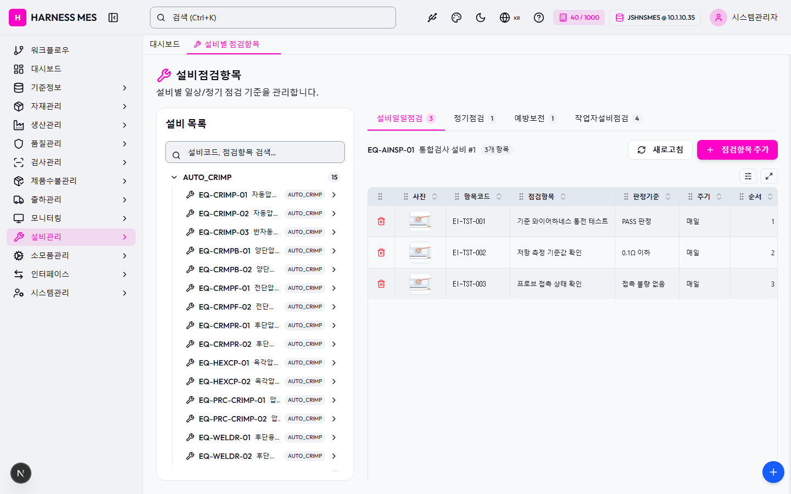

Route: /master/equip-inspect
Status: PASS / HTTP 200
| 기능/버튼 | 처리 방식 | 상태 | 비고 |
|---|---|---|---|
| 화면 로드 | GET /master/equip-inspect | 실행 | HTTP 200 |
| 초기 API 호출 | 브라우저 네트워크 수집 | 실행 | 12건 |
| 🇰🇷 | 화면 버튼 목록화 | 목록화 | 후속 메뉴별 세부 시나리오 실행 대상 |
| 시스템관리자 | 화면 버튼 목록화 | 목록화 | 후속 메뉴별 세부 시나리오 실행 대상 |
| 워크플로우 | 화면 버튼 목록화 | 목록화 | 후속 메뉴별 세부 시나리오 실행 대상 |
| 대시보드 | 화면 버튼 목록화 | 목록화 | 후속 메뉴별 세부 시나리오 실행 대상 |
| 기준정보 | 화면 버튼 목록화 | 목록화 | 후속 메뉴별 세부 시나리오 실행 대상 |
| 자재관리 | 화면 버튼 목록화 | 목록화 | 후속 메뉴별 세부 시나리오 실행 대상 |
| 생산관리 | 화면 버튼 목록화 | 목록화 | 후속 메뉴별 세부 시나리오 실행 대상 |
| 품질관리 | 화면 버튼 목록화 | 목록화 | 후속 메뉴별 세부 시나리오 실행 대상 |
| 검사관리 | 화면 버튼 목록화 | 목록화 | 후속 메뉴별 세부 시나리오 실행 대상 |
| 제품수불관리 | 화면 버튼 목록화 | 목록화 | 후속 메뉴별 세부 시나리오 실행 대상 |
| 출하관리 | 화면 버튼 목록화 | 목록화 | 후속 메뉴별 세부 시나리오 실행 대상 |
| 모니터링 | 화면 버튼 목록화 | 목록화 | 후속 메뉴별 세부 시나리오 실행 대상 |
| 설비관리 | 화면 버튼 목록화 | 목록화 | 후속 메뉴별 세부 시나리오 실행 대상 |
| 소모품관리 | 화면 버튼 목록화 | 목록화 | 후속 메뉴별 세부 시나리오 실행 대상 |
| 인터페이스 | 화면 버튼 목록화 | 목록화 | 후속 메뉴별 세부 시나리오 실행 대상 |
| 시스템관리 | 화면 버튼 목록화 | 목록화 | 후속 메뉴별 세부 시나리오 실행 대상 |
| 설비별 점검항목 | 화면 버튼 목록화 | 목록화 | 후속 메뉴별 세부 시나리오 실행 대상 |
| AUTO_CRIMP 15 | 화면 버튼 목록화 | 목록화 | 후속 메뉴별 세부 시나리오 실행 대상 |
| EQ-CRIMP-01 자동압착기 #1 AUTO_CRIMP | 화면 버튼 목록화 | 목록화 | 후속 메뉴별 세부 시나리오 실행 대상 |
| EQ-CRIMP-02 자동압착기 #2 AUTO_CRIMP | 화면 버튼 목록화 | 목록화 | 후속 메뉴별 세부 시나리오 실행 대상 |
| EQ-CRIMP-03 반자동압착기 #1 AUTO_CRIMP | 화면 버튼 목록화 | 목록화 | 후속 메뉴별 세부 시나리오 실행 대상 |
| EQ-CRMPB-01 양단압착 설비 #1 AUTO_CRIMP | 화면 버튼 목록화 | 목록화 | 후속 메뉴별 세부 시나리오 실행 대상 |
| EQ-CRMPB-02 양단압착 설비 #2 AUTO_CRIMP | 화면 버튼 목록화 | 목록화 | 후속 메뉴별 세부 시나리오 실행 대상 |
| EQ-CRMPF-01 전단압착 설비 #1 AUTO_CRIMP | 화면 버튼 목록화 | 목록화 | 후속 메뉴별 세부 시나리오 실행 대상 |
| EQ-CRMPF-02 전단압착 설비 #2 AUTO_CRIMP | 화면 버튼 목록화 | 목록화 | 후속 메뉴별 세부 시나리오 실행 대상 |
| EQ-CRMPR-01 후단압착 설비 #1 AUTO_CRIMP | 화면 버튼 목록화 | 목록화 | 후속 메뉴별 세부 시나리오 실행 대상 |
| EQ-CRMPR-02 후단압착 설비 #2 AUTO_CRIMP | 화면 버튼 목록화 | 목록화 | 후속 메뉴별 세부 시나리오 실행 대상 |
| EQ-HEXCP-01 육각압착 설비 #1 AUTO_CRIMP | 화면 버튼 목록화 | 목록화 | 후속 메뉴별 세부 시나리오 실행 대상 |
| EQ-HEXCP-02 육각압착 설비 #2 AUTO_CRIMP | 화면 버튼 목록화 | 목록화 | 후속 메뉴별 세부 시나리오 실행 대상 |
| EQ-PRC-CRIMP-01 압착 설비 #1 AUTO_CRIMP | 화면 버튼 목록화 | 목록화 | 후속 메뉴별 세부 시나리오 실행 대상 |
| EQ-PRC-CRIMP-02 압착 설비 #2 AUTO_CRIMP | 화면 버튼 목록화 | 목록화 | 후속 메뉴별 세부 시나리오 실행 대상 |
| EQ-WELDR-01 후단융착 설비 #1 AUTO_CRIMP | 화면 버튼 목록화 | 목록화 | 후속 메뉴별 세부 시나리오 실행 대상 |
| EQ-WELDR-02 후단융착 설비 #2 AUTO_CRIMP | 화면 버튼 목록화 | 목록화 | 후속 메뉴별 세부 시나리오 실행 대상 |
| HOUSING 4 | 화면 버튼 목록화 | 목록화 | 후속 메뉴별 세부 시나리오 실행 대상 |
| EQ-AUXMT-01 부자재장착 설비 #1 HOUSING | 화면 버튼 목록화 | 목록화 | 후속 메뉴별 세부 시나리오 실행 대상 |
| EQ-MASSY-01 조립 설비 #1 HOUSING | 화면 버튼 목록화 | 목록화 | 후속 메뉴별 세부 시나리오 실행 대상 |
| EQ-SASSY-01 서브조립 설비 #1 HOUSING | 화면 버튼 목록화 | 목록화 | 후속 메뉴별 세부 시나리오 실행 대상 |
| EQ-TAPPN-01 배판작업(테이핑) 설비 #1 HOUSING | 화면 버튼 목록화 | 목록화 | 후속 메뉴별 세부 시나리오 실행 대상 |
| OTHER 11 | 화면 버튼 목록화 | 목록화 | 후속 메뉴별 세부 시나리오 실행 대상 |
| EQ-ATCNS-01 자동절단탈피 설비 #1 OTHER | 화면 버튼 목록화 | 목록화 | 후속 메뉴별 세부 시나리오 실행 대상 |
| EQ-ATCNS-02 자동절단탈피 설비 #2 OTHER | 화면 버튼 목록화 | 목록화 | 후속 메뉴별 세부 시나리오 실행 대상 |
| EQ-MTASY-01 자재장착 설비 #1 OTHER | 화면 버튼 목록화 | 목록화 | 후속 메뉴별 세부 시나리오 실행 대상 |
| EQ-PRC-STRIP-01 탈피 설비 #1 OTHER | 화면 버튼 목록화 | 목록화 | 후속 메뉴별 세부 시나리오 실행 대상 |
| EQ-PRC-STRIP-02 탈피 설비 #2 OTHER | 화면 버튼 목록화 | 목록화 | 후속 메뉴별 세부 시나리오 실행 대상 |
| EQ-SHDRM-01 편조제거 설비 #1 OTHER | 화면 버튼 목록화 | 목록화 | 후속 메뉴별 세부 시나리오 실행 대상 |
| EQ-SHDRM-02 편조제거 설비 #2 OTHER | 화면 버튼 목록화 | 목록화 | 후속 메뉴별 세부 시나리오 실행 대상 |
| EQ-STRIP-01 자동탈피기 #1 OTHER | 화면 버튼 목록화 | 목록화 | 후속 메뉴별 세부 시나리오 실행 대상 |
| EQ-STRPB-01 양단탈피 설비 #1 OTHER | 화면 버튼 목록화 | 목록화 | 후속 메뉴별 세부 시나리오 실행 대상 |
| EQ-STRPB-02 양단탈피 설비 #2 OTHER | 화면 버튼 목록화 | 목록화 | 후속 메뉴별 세부 시나리오 실행 대상 |
| EQ-TUBHT-01 튜브열처리 설비 #1 OTHER | 화면 버튼 목록화 | 목록화 | 후속 메뉴별 세부 시나리오 실행 대상 |
| SINGLE_CUT 6 | 화면 버튼 목록화 | 목록화 | 후속 메뉴별 세부 시나리오 실행 대상 |
| EQ-ATCUT-01 자동절단 설비 #1 SINGLE_CUT | 화면 버튼 목록화 | 목록화 | 후속 메뉴별 세부 시나리오 실행 대상 |
| EQ-ATCUT-02 자동절단 설비 #2 SINGLE_CUT | 화면 버튼 목록화 | 목록화 | 후속 메뉴별 세부 시나리오 실행 대상 |
| EQ-CUT-01 자동절단기 #1 SINGLE_CUT | 화면 버튼 목록화 | 목록화 | 후속 메뉴별 세부 시나리오 실행 대상 |
| EQ-CUT-02 자동절단기 #2 SINGLE_CUT | 화면 버튼 목록화 | 목록화 | 후속 메뉴별 세부 시나리오 실행 대상 |
| EQ-PRC-CUT-01 절단 설비 #1 SINGLE_CUT | 화면 버튼 목록화 | 목록화 | 후속 메뉴별 세부 시나리오 실행 대상 |
| EQ-PRC-CUT-02 절단 설비 #2 SINGLE_CUT | 화면 버튼 목록화 | 목록화 | 후속 메뉴별 세부 시나리오 실행 대상 |
| TESTER 10 | 화면 버튼 목록화 | 목록화 | 후속 메뉴별 세부 시나리오 실행 대상 |
| EQ-AINSP-01 통합검사 설비 #1 TESTER | 화면 버튼 목록화 | 목록화 | 후속 메뉴별 세부 시나리오 실행 대상 |
| EQ-AINSP-02 통합검사 설비 #2 TESTER | 화면 버튼 목록화 | 목록화 | 후속 메뉴별 세부 시나리오 실행 대상 |
| EQ-OINSP-01 외관검사 설비 #1 TESTER | 화면 버튼 목록화 | 목록화 | 후속 메뉴별 세부 시나리오 실행 대상 |
| EQ-OINSP-02 외관검사 설비 #2 TESTER | 화면 버튼 목록화 | 목록화 | 후속 메뉴별 세부 시나리오 실행 대상 |
| EQ-PRC-TEST-01 도통검사 설비 #1 TESTER | 화면 버튼 목록화 | 목록화 | 후속 메뉴별 세부 시나리오 실행 대상 |
| EQ-PRC-TEST-02 도통검사 설비 #2 TESTER | 화면 버튼 목록화 | 목록화 | 후속 메뉴별 세부 시나리오 실행 대상 |
| EQ-TEST-01 도통검사기 #1 TESTER | 화면 버튼 목록화 | 목록화 | 후속 메뉴별 세부 시나리오 실행 대상 |
| EQ-TEST-02 도통검사기 #2 TESTER | 화면 버튼 목록화 | 목록화 | 후속 메뉴별 세부 시나리오 실행 대상 |
| EQ-TINSP-01 단자검사 설비 #1 TESTER | 화면 버튼 목록화 | 목록화 | 후속 메뉴별 세부 시나리오 실행 대상 |
| EQ-TINSP-02 단자검사 설비 #2 TESTER | 화면 버튼 목록화 | 목록화 | 후속 메뉴별 세부 시나리오 실행 대상 |
| 설비일일점검 3 | 화면 버튼 목록화 | 목록화 | 후속 메뉴별 세부 시나리오 실행 대상 |
| 정기점검 1 | 화면 버튼 목록화 | 목록화 | 후속 메뉴별 세부 시나리오 실행 대상 |
| 예방보전 1 | 화면 버튼 목록화 | 목록화 | 후속 메뉴별 세부 시나리오 실행 대상 |
| 작업자설비점검 4 | 화면 버튼 목록화 | 목록화 | 후속 메뉴별 세부 시나리오 실행 대상 |
| 새로고침 | 화면 버튼 목록화 | 목록화 | 후속 메뉴별 세부 시나리오 실행 대상 |
| 점검항목 추가 | 화면 버튼 목록화 | 목록화 | 후속 메뉴별 세부 시나리오 실행 대상 |
| 입력 필드 | DOM 수집 | 목록화 | 3개 |
| 선택 필드 | DOM 수집 | 목록화 | 2개 |
| 목록/그리드 | DOM 수집 | 목록화 | table 1, grid 0 |
| Method | URL | Status | OK |
|---|---|---|---|
| GET | /api/health | 200 | OK |
| GET | /api/db-info | 200 | OK |
| GET | /api/health | 200 | OK |
| GET | /api/db-info | 200 | OK |
| GET | /api/db-info | 200 | OK |
| GET | /api/system/comm-configs?commType=SERIAL&useYn=Y | 200 | OK |
| GET | /api/auth/me | 200 | OK |
| GET | /api/system/configs/active | 200 | OK |
| GET | /api/menu-categories/tree | 200 | OK |
| GET | /api/master/com-codes/all-active | 200 | OK |
| GET | /api/equipment/equips?limit=500 | 200 | OK |
| GET | /api/master/equip-inspect-items?equipCode=EQ-AINSP-01&limit=500 | 200 | OK |
requestfailed: GET https://fonts.gstatic.com/s/outfit/v15/QGYvz_MVcBeNP4NJtEtq.woff2 net::ERR_ABORTED

H HARNESS MES 🇰🇷 40 / 1000 JSHNSMES @ 10.1.10.35 시스템관리자 워크플로우 대시보드 기준정보 자재관리 생산관리 품질관리 검사관리 제품수불관리 출하관리 모니터링 설비관리 소모품관리 인터페이스 시스템관리 대시보드 설비별 점검항목 설비점검항목 설비별 일상/정기 점검 기준을 관리합니다. 설비 목록 AUTO_CRIMP 15 EQ-CRIMP-01 자동압착기 #1 AUTO_CRIMP EQ-CRIMP-02 자동압착기 #2 AUTO_CRIMP EQ-CRIMP-03 반자동압착기 #1 AUTO_CRIMP EQ-CRMPB-01 양단압착 설비 #1 AUTO_CRIMP EQ-CRMPB-02 양단압착 설비 #2 AUTO_CRIMP EQ-CRMPF-01 전단압착 설비 #1 AUTO_CRIMP EQ-CRMPF-02 전단압착 설비 #2 AUTO_CRIMP EQ-CRMPR-01 후단압착 설비 #1 AUTO_CRIMP EQ-CRMPR-02 후단압착 설비 #2 AUTO_CRIMP EQ-HEXCP-01 육각압착 설비 #1 AUTO_CRIMP EQ-HEXCP-02 육각압착 설비 #2 AUTO_CRIMP EQ-PRC-CRIMP-01 압착 설비 #1 AUTO_CRIMP EQ-PRC-CRIMP-02 압착 설비 #2 AUTO_CRIMP EQ-WELDR-01 후단융착 설비 #1 AUTO_CRIMP EQ-WELDR-02 후단융착 설비 #2 AUTO_CRIMP HOUSING 4 EQ-AUXMT-01 부자재장착 설비 #1 HOUSING EQ-MASSY-01 조립 설비 #1 HOUSING EQ-SASSY-01 서브조립 설비 #1 HOUSING EQ-TAPPN-01 배판작업(테이핑) 설비 #1 HOUSING OTHER 11 EQ-ATCNS-01 자동절단탈피 설비 #1 OTHER EQ-ATCNS-02 자동절단탈피 설비 #2 OTHER EQ-MTASY-01 자재장착 설비 #1 OTHER EQ-PRC-STRIP-01 탈피 설비 #1 OTHER EQ-PRC-STRIP-02 탈피 설비 #2 OTHER EQ-SHDRM-01 편조제거 설비 #1 OTHER EQ-SHDRM-02 편조제거 설비 #2 OTHER EQ-STRIP-01 자동탈피기 #1 OTHER EQ-STRPB-01 양단탈피 설비 #1 OTHER EQ-STRPB-02 양단탈피 설비 #2 OTHER EQ-TUBHT-01 튜브열처리 설비 #1 OTHER SINGLE_CUT 6 EQ-ATC